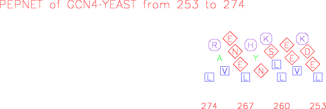

|
|
pepnet |
pepnet draws a helical net for an input protein sequence. This is a method of displaying the residues of a protein in a simple 3,4,3,4 repeating pattern that emulates at a simple level the arrangement of residues around an alpha helix. It is therefore easy to see patterns of amphipathicity that you may wish to investigate in more detail by using displays such as pepwheel. You can specify which residues to mark up in squares, diamonds and octagons.
% pepnet -sask
Draw a helical net for a protein sequence
Input protein sequence: tsw:gcn4_yeast
Begin at position [start]: 253
End at position [end]: 274
Graph type [x11]: cps
Created pepnet.ps
|
Go to the input files for this example
Go to the output files for this example
Standard (Mandatory) qualifiers:
[-sequence] sequence Protein sequence filename and optional
format, or reference (input USA)
-graph graph [$EMBOSS_GRAPHICS value, or x11] Graph type
(ps, hpgl, hp7470, hp7580, meta, cps, x11,
tekt, tek, none, data, xterm, png, gif)
Additional (Optional) qualifiers (* if not always prompted):
* -squares string [ILVM] By default the aliphatic residues
ILVM are marked with squares. (Any string is
accepted)
* -diamonds string [DENQST] By default the residues DENQST are
marked with diamonds. (Any string is
accepted)
* -octags string [HKR] By default the positively charged
residues HKR are marked with octagons. (Any
string is accepted)
Advanced (Unprompted) qualifiers:
-amphipathic toggle If this is true then the residues ACFGILMVWY
are marked as squares and all other
residues are unmarked. This overrides any
other markup that you may have specified
using the qualifiers '-squares', '-diamonds'
and '-octags'.
Associated qualifiers:
"-sequence" associated qualifiers
-sbegin1 integer Start of the sequence to be used
-send1 integer End of the sequence to be used
-sreverse1 boolean Reverse (if DNA)
-sask1 boolean Ask for begin/end/reverse
-snucleotide1 boolean Sequence is nucleotide
-sprotein1 boolean Sequence is protein
-slower1 boolean Make lower case
-supper1 boolean Make upper case
-sformat1 string Input sequence format
-sdbname1 string Database name
-sid1 string Entryname
-ufo1 string UFO features
-fformat1 string Features format
-fopenfile1 string Features file name
"-graph" associated qualifiers
-gprompt boolean Graph prompting
-gdesc string Graph description
-gtitle string Graph title
-gsubtitle string Graph subtitle
-gxtitle string Graph x axis title
-gytitle string Graph y axis title
-goutfile string Output file for non interactive displays
-gdirectory string Output directory
General qualifiers:
-auto boolean Turn off prompts
-stdout boolean Write first file to standard output
-filter boolean Read first file from standard input, write
first file to standard output
-options boolean Prompt for standard and additional values
-debug boolean Write debug output to program.dbg
-verbose boolean Report some/full command line options
-help boolean Report command line options. More
information on associated and general
qualifiers can be found with -help -verbose
-warning boolean Report warnings
-error boolean Report errors
-fatal boolean Report fatal errors
-die boolean Report dying program messages
|
| Standard (Mandatory) qualifiers | Allowed values | Default | |
|---|---|---|---|
| [-sequence] (Parameter 1) |
Protein sequence filename and optional format, or reference (input USA) | Readable sequence | Required |
| -graph | Graph type | EMBOSS has a list of known devices, including ps, hpgl, hp7470, hp7580, meta, cps, x11, tekt, tek, none, data, xterm, png, gif | EMBOSS_GRAPHICS value, or x11 |
| Additional (Optional) qualifiers | Allowed values | Default | |
| -squares | By default the aliphatic residues ILVM are marked with squares. | Any string is accepted | ILVM |
| -diamonds | By default the residues DENQST are marked with diamonds. | Any string is accepted | DENQST |
| -octags | By default the positively charged residues HKR are marked with octagons. | Any string is accepted | HKR |
| Advanced (Unprompted) qualifiers | Allowed values | Default | |
| -amphipathic | If this is true then the residues ACFGILMVWY are marked as squares and all other residues are unmarked. This overrides any other markup that you may have specified using the qualifiers '-squares', '-diamonds' and '-octags'. | Toggle value Yes/No | No |
ID GCN4_YEAST Reviewed; 281 AA.
AC P03069; P03068; Q70D88; Q70D91; Q70D96; Q70D99; Q70DA0; Q96UT3;
DT 21-JUL-1986, integrated into UniProtKB/Swiss-Prot.
DT 21-JUL-1986, sequence version 1.
DT 20-MAR-2007, entry version 82.
DE General control protein GCN4 (Amino acid biosynthesis regulatory
DE protein).
GN Name=GCN4; Synonyms=AAS3, ARG9; OrderedLocusNames=YEL009C;
OS Saccharomyces cerevisiae (Baker's yeast).
OC Eukaryota; Fungi; Ascomycota; Saccharomycotina; Saccharomycetes;
OC Saccharomycetales; Saccharomycetaceae; Saccharomyces.
OX NCBI_TaxID=4932;
RN [1]
RP NUCLEOTIDE SEQUENCE [GENOMIC DNA].
RX MEDLINE=85038531; PubMed=6387704;
RA Hinnebusch A.G.;
RT "Evidence for translational regulation of the activator of general
RT amino acid control in yeast.";
RL Proc. Natl. Acad. Sci. U.S.A. 81:6442-6446(1984).
RN [2]
RP NUCLEOTIDE SEQUENCE [GENOMIC DNA].
RX MEDLINE=84298088; PubMed=6433345;
RA Thireos G., Penn M.D., Greer H.;
RT "5' untranslated sequences are required for the translational control
RT of a yeast regulatory gene.";
RL Proc. Natl. Acad. Sci. U.S.A. 81:5096-5100(1984).
RN [3]
RP NUCLEOTIDE SEQUENCE [GENOMIC DNA], AND VARIANTS PRO-24; SER-62;
RP ALA-82; ALA-91; ALA-125 AND GLU-196.
RC STRAIN=CLIB 219, CLIB 382, CLIB 388, CLIB 410, CLIB 413, CLIB 556,
RC CLIB 630, CLIB 95, K1, R12, R13, Sigma 1278B, YIIc12, and YIIc17;
RX PubMed=15087486; DOI=10.1093/nar/gkh529;
RA Leh-Louis V., Wirth B., Despons L., Wain-Hobson S., Potier S.,
RA Souciet J.-L.;
RT "Differential evolution of the Saccharomyces cerevisiae DUP240
RT paralogs and implication of recombination in phylogeny.";
RL Nucleic Acids Res. 32:2069-2078(2004).
RN [4]
RP NUCLEOTIDE SEQUENCE [LARGE SCALE GENOMIC DNA].
RC STRAIN=ATCC 204511 / S288c / AB972;
RX MEDLINE=97313264; PubMed=9169868;
RA Dietrich F.S., Mulligan J.T., Hennessy K.M., Yelton M.A., Allen E.,
RA Araujo R., Aviles E., Berno A., Brennan T., Carpenter J., Chen E.,
RA Cherry J.M., Chung E., Duncan M., Guzman E., Hartzell G.,
RA Hunicke-Smith S., Hyman R.W., Kayser A., Komp C., Lashkari D., Lew H.,
RA Lin D., Mosedale D., Nakahara K., Namath A., Norgren R., Oefner P.,
RA Oh C., Petel F.X., Roberts D., Sehl P., Schramm S., Shogren T.,
RA Smith V., Taylor P., Wei Y., Botstein D., Davis R.W.;
RT "The nucleotide sequence of Saccharomyces cerevisiae chromosome V.";
RL Nature 387:78-81(1997).
[Part of this file has been deleted for brevity]
FT CHAIN 1 281 General control protein GCN4.
FT /FTId=PRO_0000076490.
FT DOMAIN 253 274 Leucine-zipper.
FT DNA_BIND 231 249 Basic motif.
FT REGION 89 100 Required for transcriptional activation.
FT REGION 106 125 Required for transcriptional activation.
FT MOD_RES 165 165 Phosphothreonine (by PHO85).
FT VARIANT 24 24 S -> P (in strain: CLIB 219).
FT VARIANT 62 62 P -> S (in strain: CLIB 630 haplotype
FT Ha2).
FT VARIANT 82 82 T -> A (in strain: CLIB 556 haplotype
FT Ha1).
FT VARIANT 91 91 D -> A (in strain: CLIB 95, CLIB 219,
FT CLIB 382, CLIB 388, CLIB 410, CLIB 413,
FT CLIB 556, CLIB 630, K1, R12, R13
FT haplotype Ha2, Sigma 1278B haplotype Ha1,
FT YIIc12 and YIIc17).
FT VARIANT 125 125 D -> A (in strain: CLIB 556 haplotype
FT Ha1).
FT VARIANT 196 196 D -> E (in strain: CLIB 388, CLIB 410,
FT CLIB 413, CLIB 630 haplotype Ha1, K1,
FT YIIc12 haplotype Ha2 and YIIc17 haplotype
FT Ha1).
FT MUTAGEN 97 98 FF->AA: Reduces transcriptional
FT activation activity; when associated with
FT A-107; A-110; A-113; A-120; A-123 and A-
FT 124.
FT MUTAGEN 107 107 M->A: Reduces transcriptional activation
FT activity; when associated with A-97; A-
FT 98; A-110; A-113; A-120; A-123 and A-124.
FT MUTAGEN 110 110 Y->A: Reduces transcriptional activation
FT activity; when associated with A-97; A-
FT 98; A-107; A-113; A-120; A-123 and A-124.
FT MUTAGEN 113 113 L->A: Reduces transcriptional activation
FT activity; when associated with A-97; A-
FT 98; A-107; A-110; A-120; A-123 and A-124.
FT MUTAGEN 120 124 WTSLF->ATSAA: Reduces transcriptional
FT activation activity; when associated with
FT A-97; A-98; A-107; A-110 and A-113.
FT CONFLICT 239 281 ARRSRARKLQRMKQLEDKVEELLSKNYHLENEVARLKKLVG
FT ER -> PGVLVRESCKE (in Ref. 2).
FT HELIX 230 276
FT HELIX 250 276
FT HELIX 251 278
SQ SEQUENCE 281 AA; 31310 MW; 2ED1B8E35D509578 CRC64;
MSEYQPSLFA LNPMGFSPLD GSKSTNENVS ASTSTAKPMV GQLIFDKFIK TEEDPIIKQD
TPSNLDFDFA LPQTATAPDA KTVLPIPELD DAVVESFFSS STDSTPMFEY ENLEDNSKEW
TSLFDNDIPV TTDDVSLADK AIESTEEVSL VPSNLEVSTT SFLPTPVLED AKLTQTRKVK
KPNSVVKKSH HVGKDDESRL DHLGVVAYNR KQRSIPLSPI VPESSDPAAL KRARNTEAAR
RSRARKLQRM KQLEDKVEEL LSKNYHLENE VARLKKLVGE R
//
|

| Program name | Description |
|---|---|
| abiview | Display the trace in an ABI sequencer file |
| cirdna | Draws circular maps of DNA constructs |
| garnier | Predicts protein secondary structure using GOR method |
| helixturnhelix | Identify nucleic acid-binding motifs in protein sequences |
| hmoment | Calculate and plot hydrophobic moment for protein sequence(s) |
| lindna | Draws linear maps of DNA constructs |
| pepcoil | Predicts coiled coil regions in protein sequences |
| pepwheel | Draw a helical wheel diagram for a protein sequence |
| prettyplot | Draw a sequence alignment with pretty formatting |
| prettyseq | Write a nucleotide sequence and its translation to file |
| remap | Display restriction enzyme binding sites in a nucleotide sequence |
| seealso | Finds programs with similar function to a specified program |
| showalign | Display a multiple sequence alignment in pretty format |
| showdb | Displays information on configured databases |
| showfeat | Display features of a sequence in pretty format |
| showseq | Displays sequences with features in pretty format |
| sixpack | Display a DNA sequence with 6-frame translation and ORFs |
| textsearch | Search the textual description of sequence(s) |
| tmap | Predict and plot transmembrane segments in protein sequences |